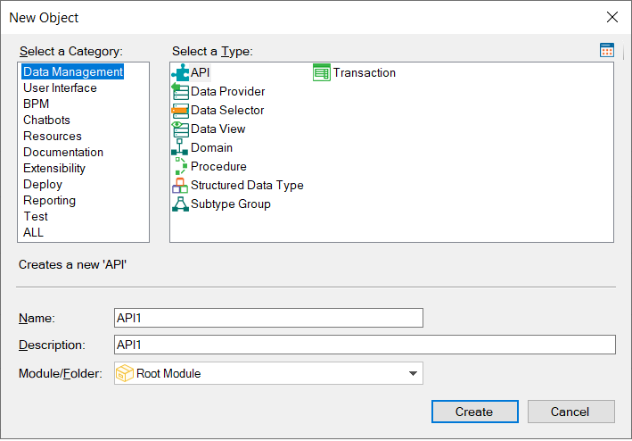
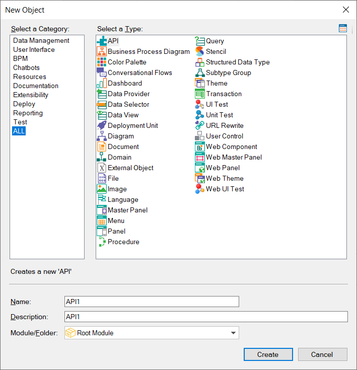

The "New Object" dialog has been updated in GeneXus 17.  You may notice some new categories that group types of GeneXus objects. You can also note some new types of GeneXus objects offered (like the API object). Also, remember that some types of objects have been renamed. If you select the category ALL, you will see all the types of GeneXus objects sorted alphabetically. You can resize the "New Object" dialog as you wish to view fewer columns or as it is more comfortable for you:  Renamed objects
|
| Master Panel object |
| API object |
| URL Rewrite object |
| UI Test object |
The Work With for Smart Devices object is no longer offered in the "New Object" dialog.
| Backlinks | |
| Flexibility and Quality with Genexus 17 | New terms in GeneXus 17 |